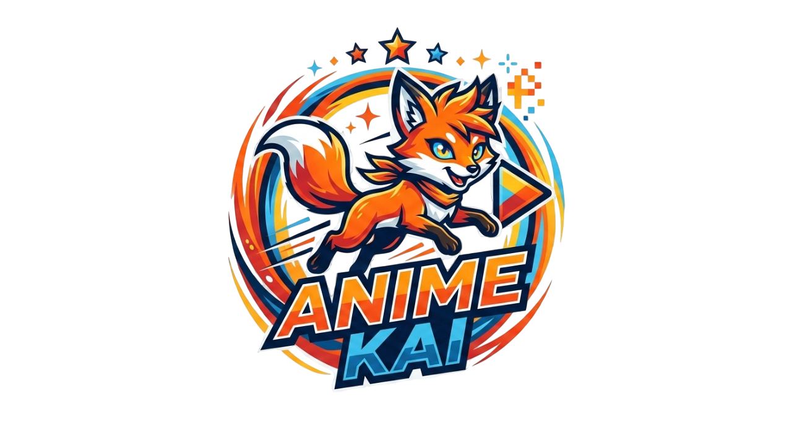

Attack on Titan é um anime e mangá criado por Hajime Isayama. A história se passa em um mundo onde a humanidade vive cercada por muralhas para se proteger de gigantes devoradores de humanos conhecidos como Titãs. O protagonista, Eren Yeager, junto com seus amigos Mikasa Ackerman e Armin Arlert, se juntam à Tropa de Exploração para lutar contra os Titãs e descobrir a verdade por trás de sua existência.